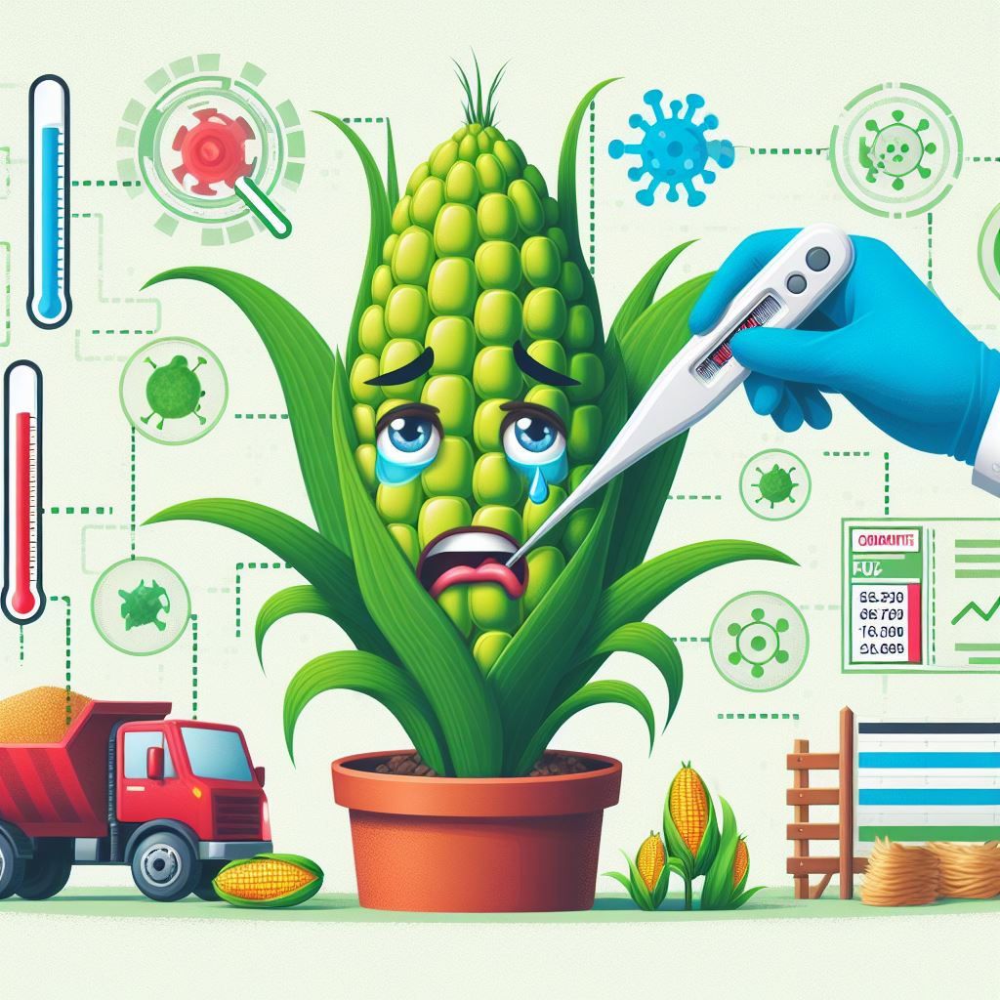

AgroIntel
AgroIntelCrop Disease Prediction
Food security for billions of people on earth requires minimizing crop damage by timely detection of diseases.Developing methods for detection of plant diseases serves the dual purpose of increasing crop yield and reducing pesticide use without knowing about the proper disease. Along with development of better crop varieties, disease detection is thus paramount goal for achieving food security. The traditional method of disease detection has been to use manual examination by either farmers or experts, which can be time-consuming and costly, proving infeasible for millions of small and medium-sized farms around the world.
